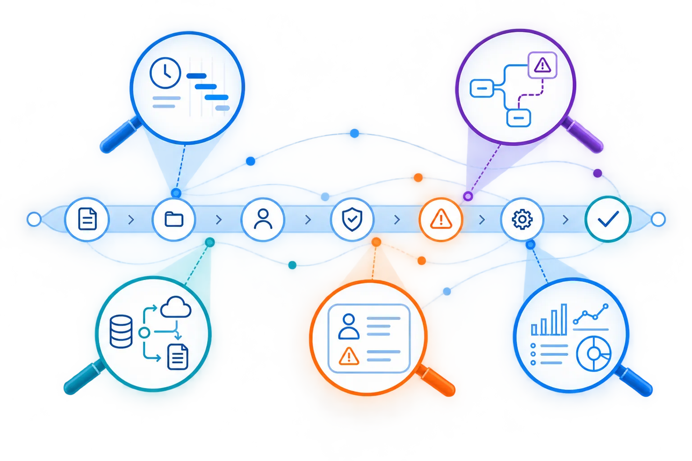

ONE PROCESS. DIFFERENT QUESTIONS.
One execution reality. Different stakeholder lenses.
Commercial customer onboarding is one example. The underlying execution is the same; the questions change depending on who is looking.

Where is cycle time accumulating?
Which paths enter additional review?
Where does execution cross systems?
Did automation actually reduce manual work?
Which customers experience the longest or most complex path?
The value is not another process diagram. It is one execution foundation that Operations, Risk, Technology, Transformation and Business teams can examine from their own perspective.